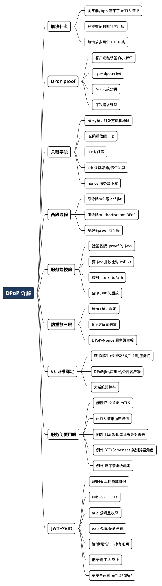

DPoP 详解:给浏览器里的令牌也上一把“偷不走”的锁
Posted on 六 01 8月 2026 in Tech
| Abstract | DPoP 详解:给浏览器里的令牌也上一把“偷不走”的锁 |
|---|---|
| Authors | Walter Fan |
| Category | learning note |
| Status | v1.0 |
| Updated | 2026-08-01 |
| License | CC-BY-NC-ND 4.0 |
上一篇聊 PoP 和证书绑定令牌时,我留了个尾巴:服务间通信用 mTLS + 证书绑定很香,但浏览器和手机 App 怎么办?
这不是抬杠。mTLS 要求客户端持有一张 X.509 证书和对应私钥。你让一个跑在别人浏览器里的单页应用(SPA)去管理客户端证书试试?给每个用户签发、安装、轮换证书,光是想想运维就头皮发麻。移动 App 稍好一点,但也远谈不上优雅。
于是就有了 DPoP(Demonstrating Proof of Possession,持有证明演示),RFC 9449 在 2023 年正式定稿。一句话:
DPoP = 不需要 mTLS 的 PoP。客户端自己生成一对公私钥,每次请求都用私钥签一张“临时证明”,证明“这令牌是我的”。
这篇文章想把 DPoP 拆到你能照着动手的程度:它到底往请求里塞了什么、服务端怎么验、防重放怎么做、以及实际接的时候会踩哪些坑。
提示:文中的 JWT、JWS、JWK、指纹这些词,第一次出现我都会用一句大白话解释。没接过 OAuth 的读者也能顺下来,代码/JSON 块可以跳过。
1. 一分钟看懂 DPoP 在解决什么
先把上一篇的结论接上。防令牌盗用,核心就一句:让令牌绑上一把“只有客户端自己有、偷不走”的私钥。
- mTLS + 证书绑定:私钥藏在 X.509 证书里,走 TLS 层面证明。适合机房里的服务。
- DPoP:私钥是客户端自己临时生成的一对密钥,走应用层(HTTP header)证明。适合浏览器、App、SPA。
关键差别在这一行:DPoP 把“持有证明”从 TLS 层挪到了应用层。 它不碰 TLS 握手,只是在每个 HTTP 请求里多加两个头。这就是它能在浏览器里跑起来的原因——JavaScript 摸不到 TLS 层,但完全可以用 Web Crypto API 生成密钥、签 JWT。
flowchart LR
subgraph 服务间
A[服务 A] -->|mTLS 层| B[服务 B]
end
subgraph 公网客户端
C[浏览器/App] -->|DPoP: 应用层 header| D[API]
end
2. 核心概念:DPoP proof 是什么
DPoP 引入的唯一新东西,叫 DPoP proof(DPoP 证明)。
它本质上是一个由客户端现场生成、用客户端私钥签名的小 JWT,放在 HTTP 请求的 DPoP 头里。每次请求都要新签一个。
拿人话打比方:令牌是你的门禁卡,DPoP proof 是你每次刷卡时当场按下的一个指纹。卡可以被复制,但指纹是活体的、一次性的、别人按不出来。攻击者就算偷走了你的卡(令牌),没有你的手指(私钥),也按不出配套的指纹(proof)。
一个 DPoP proof 大致长这样,分头部和载荷两段:
// header
{
"typ": "dpop+jwt",
"alg": "ES256",
"jwk": { "kty": "EC", "crv": "P-256", "x": "...", "y": "..." }
}
// payload
{
"jti": "e1j3V_bK...",
"htm": "GET",
"htu": "https://api.example.com/orders",
"iat": 1705123456,
"ath": "fUHyO2r2Z3DZ53Es..."
}
先记住两个头部字段:
typ固定是dpop+jwt,让服务端一眼认出“这是个 DPoP proof,别当普通 JWT 处理”。jwk是客户端的公钥(JWK = JSON Web Key,公钥的 JSON 表示)。注意:只放公钥,绝不能放私钥。 服务端就靠这个公钥来验签,并算出它的指纹。
载荷里的字段我们下一节逐个拆。
3. DPoP proof 里的字段,逐个拆
RFC 9449 规定 payload 里至少要有这几个:
| 字段 | 含义 | 作用 |
|---|---|---|
jti |
本次 proof 的唯一 ID | 防重放(服务端记下用过的,不许再用) |
htm |
本次请求的 HTTP 方法(GET/POST…) | 把 proof 钉死在这个方法上 |
htu |
本次请求的目标 URI(去掉 query 和 fragment) | 把 proof 钉死在这个地址上 |
iat |
签发时间戳 | 判断 proof 是不是太老了 |
在带着访问令牌去访问受保护资源时,还必须多一个:
| 字段 | 含义 | 作用 |
|---|---|---|
ath |
访问令牌的 SHA-256 哈希(base64url 编码) | 把 proof 和具体这个令牌绑在一起 |
如果服务端要求用 nonce(下面第 6 节讲),还得再加:
| 字段 | 含义 |
|---|---|
nonce |
服务端通过 DPoP-Nonce 响应头下发的一次性随机值 |
htm + htu 这一对是 DPoP 的精髓:proof 里写死了“我这张证明只对 GET https://api.example.com/orders 有效”。攻击者就算截获了整个请求,也没法把这张 proof 挪到别的接口或别的方法上用——换个动作、换个地址,签名就对不上了。
ath 则把 proof 和令牌本身拴死:proof 里存着令牌的哈希,服务端会核对“你这张 proof 里说的令牌哈希,是不是就是你这次带来的令牌”。这样连“拿 A 令牌配 B proof”的错配都堵死了。
jti(唯一 ID)按规范建议至少 96 位伪随机数据,或直接用一个 v4 UUID。它是防重放的钥匙。
4. 完整流程:两段式
RFC 9449 把 DPoP 拆成两个可分开的部分,理解这一点特别重要:
- 第一段(取令牌):客户端向授权服务器换一个 DPoP-bound(DPoP 绑定)的访问令牌。
- 第二段(用令牌):客户端拿着这个令牌访问资源服务器,并证明自己控制那把私钥。
第一段:换一个 DPoP 绑定的令牌
sequenceDiagram
participant C as 客户端(浏览器)
participant AS as 授权服务器
C->>C: 生成一对公私钥(ES256)
C->>C: 签 DPoP proof(htm=POST, htu=token端点)
C->>AS: POST /token + DPoP: <proof>
AS->>AS: 验 proof, 取出公钥算指纹 jkt
AS-->>C: 访问令牌(cnf.jkt = 公钥指纹)
关键在最后一步:授权服务器把客户端公钥的 SHA-256 指纹记进令牌的 cnf(确认声明)里,字段名叫 jkt:
{
"sub": "alice",
"cnf": { "jkt": "0ZcOCORZNYy-..." }
}
jkt = JWK SHA-256 Thumbprint(JWK 的 SHA-256 指纹,算法见 RFC 7638)。这一步就完成了“绑定”:这令牌从此只认指纹为 0ZcOCORZNYy-... 的那把公钥。
对照上一篇:证书绑定用的是 cnf.x5t#S256(证书指纹),DPoP 用的是 cnf.jkt(公钥指纹)。骨架都是 cnf,区别只在绑证书还是绑公钥。
第二段:拿令牌访问资源
sequenceDiagram
participant C as 客户端
participant RS as 资源服务器
C->>C: 新签一个 DPoP proof(htm=GET, htu=/orders, ath=令牌哈希)
C->>RS: GET /orders<br/>Authorization: DPoP <token><br/>DPoP: <proof>
RS->>RS: ① 验 proof 签名(用 proof 里的 jwk)
RS->>RS: ② 算 jwk 指纹, 比对令牌里的 cnf.jkt
RS->>RS: ③ 核对 htm/htu 是否匹配本次请求
RS->>RS: ④ 核对 ath 是否等于本次令牌的哈希
RS->>RS: ⑤ 检查 jti 没被用过、iat 没过期
RS-->>C: 全过 → 放行 ✅
注意这里有个容易忽略的细节:访问资源时,请求头的 认证方案从 Bearer 换成了 DPoP:
Authorization: DPoP eyJhbGci... ← 令牌本身
DPoP: eyJ0eXAi... ← 本次的 proof
一个头放令牌,一个头放 proof。服务端两个都要验。
5. 服务端到底验哪几步
把第二段那五步展开说清楚,这是接 DPoP 时最容易漏的地方。资源服务器收到请求后:
- 验 proof 是个合法 JWT:
typ是dpop+jwt,alg是允许的非对称算法(别接受none,也别接受对称算法)。 - 用 proof 头里的
jwk验签名:签名对,说明这张 proof 确实是这把私钥签的。 - 算
jwk的指纹,和令牌里的cnf.jkt比对:一致,才说明“签 proof 的私钥”和“令牌绑定的公钥”是一对。这一步是防盗用的核心。 - 核对
htm/htu:和本次请求的实际方法、URI 一致。防止 proof 被挪用到别的接口。 - 核对
ath:等于本次带来的访问令牌的 SHA-256 哈希。防止令牌和 proof 错配。 - 检查
iat在可接受的时间窗内(比如几秒到几分钟),jti没在窗口内出现过。防重放。 - (若启用 nonce)核对
nonce是不是服务端最近下发的那个。
漏掉第 3 步,DPoP 就退化成了普通 Bearer——proof 签得再漂亮,不和令牌指纹比对,等于白签。这是我见过最常见的实现错误。
6. 防重放:jti、时间窗与 DPoP-Nonce
DPoP proof 是明文放在 HTTP 头里的,理论上会被中间人看到。所以“别人录下一个 proof、原样再发一次”这种重放攻击必须防住。RFC 9449 给了三层防线:
第一层:htm + htu。 proof 钉死了方法和地址,重放只能重放到同一个接口的同一个动作上,先砍掉一大片攻击面。
第二层:jti + 时间窗。 服务端在一个短时间窗(比如 60 秒)内,记住见过的 jti;重复出现就拒绝。窗口一过,iat 太老的 proof 本身也失效了,记录可以清掉,不至于让服务端无限存 jti。
第三层:DPoP-Nonce(可选,但推荐)。 前两层依赖服务端存状态(记 jti)。如果服务端是无状态的、或者水平扩展了好多台,记 jti 就变麻烦。这时可以让服务端主动下发一个 nonce:
sequenceDiagram
participant C as 客户端
participant S as 服务端
C->>S: 请求(proof 里没 nonce)
S-->>C: 401 + DPoP-Nonce: abc123
C->>C: 重签 proof, 加上 nonce=abc123
C->>S: 重新请求(proof 带 nonce)
S-->>S: nonce 是我发的且新鲜 → 放行 ✅
nonce 由服务端掌控、可自带时效,相当于服务端说“这张 proof 必须用我刚给你的这个暗号”,把“proof 何时有效”的主动权收回到服务端手里。代价是每次可能多一轮 401 往返(客户端可以缓存 nonce 复用一段时间来摊薄)。
7. DPoP vs 证书绑定,到底怎么选
放一张对比表收口:
| 维度 | Certificate-Bound(mTLS) | DPoP |
|---|---|---|
| 绑定对象 | X.509 客户端证书 | 客户端自生成的公钥 |
cnf 字段 |
x5t#S256(证书指纹) |
jkt(公钥指纹) |
| 证明发生在 | TLS 层(握手) | 应用层(HTTP 头) |
| 需要客户端证书吗 | 需要 | 不需要 |
| 适合谁 | 机房里的服务、服务间通信 | 浏览器、SPA、移动 App |
| 运维负担 | 证书签发/分发/轮换 | 客户端自己生成密钥,几乎无运维 |
| 每次请求开销 | TLS 层承担,应用无感 | 每请求多签一个 JWT + 多两个头 |
一句话决策:
客户端能优雅地管 X.509 证书吗?能——上 mTLS + 证书绑定;不能(浏览器/App)——上 DPoP。
两者不是对立的,大型系统里常常并存:南北向(用户到网关)走 DPoP,东西向(服务到服务)走 mTLS。
8. 后台服务之间调用,适合用 DPoP 吗?
这是我被追问最多的一个问题:“DPoP 就是一对公私钥 + 签个 JWT,后台服务之间也能生成密钥、也能签 JWT,那服务间调用干脆全上 DPoP 不就完了,还省得折腾证书?”
技术上完全可行,DPoP 并没有规定“只准浏览器用”。但在标准的、南北向的服务间通信里,它通常不是首选。原因得掰开看。
为什么服务间通常不首选 DPoP
DPoP 是为“摸不到 TLS 层”的客户端设计的——浏览器里的 JS 没法要求用某张客户端证书握手,只能退而求其次,在应用层自己签证明。而后台服务之间,恰恰能优雅地控制 TLS 层:配一张客户端证书对服务来说是常规操作,Kubernetes、服务网格更是把这事自动化了。既然能在更底层、更省事地解决,就没必要绕到应用层。
具体差在这几点:
| 维度 | 服务间用 mTLS + 证书绑定 | 服务间用 DPoP |
|---|---|---|
| 证明发生在 | TLS 握手,一次连接谈一次 | 每个请求都要现签一个 proof JWT |
| 每请求开销 | 复用 TLS 连接,应用几乎无感 | 每请求多一次签名 + 多两个头 |
| 连接安全 | 天然要求加密通道(mTLS) | DPoP 本身不管传输,仍需另配 TLS |
| 生态适配 | 服务网格/K8s 原生支持 | 要自己实现 proof 生成与校验 |
| 运维 | 证书签发/轮换,但已有成熟工具 | 密钥管理要自己扛 |
一句话:服务能管好证书的场合,mTLS 在更低的层把事办了,还顺带保证了通道加密;DPoP 在这里等于“用应用层的力气,去做 TLS 层本可以做的事”,每个请求还多一份签名开销。
那什么时候服务间也值得用 DPoP?
也别一棍子打死。下面几种情况,服务间用 DPoP 反而合理:
- 中间有 TLS 终止(TLS termination)。 如果流量在负载均衡、API 网关、CDN 处就把 TLS 卸载了,后端拿到的是明文 HTTP,mTLS 的客户端证书信息在这一跳就“断了”。这时应用层的 DPoP 能穿透这些中间层,因为它绑在 HTTP 消息里,不依赖端到端的 TLS。
- 调用方本身就是个“类浏览器”客户端。 比如一个 BFF(Backend for Frontend)、或某些 Serverless 函数,拿不到稳定的客户端证书身份,那它对下游的角色更接近公网客户端,用 DPoP 顺理成章。
- 想要“每请求级”的绑定粒度。 mTLS 绑的是连接,DPoP 绑的是每一个请求(
htm/htu/ath都在 proof 里)。如果你的威胁模型里,连接建立后单个请求被篡改/挪用也是要防的,DPoP 的粒度更细。 - 统一栈,减少两套机制。 如果南北向已经全量铺了 DPoP,团队又不想再维护一套 mTLS 证书体系,东西向复用 DPoP 能降低认知和运维成本——这是工程权衡,不是安全最优。
flowchart TD
Q{服务间调用} --> A{能稳定持有<br/>客户端证书?}
A -- 能 --> B{中间有 TLS 终止<br/>导致证书身份丢失?}
A -- 不能<br/>类浏览器角色 --> D[用 DPoP]
B -- 否 --> C[首选 mTLS + 证书绑定]
B -- 是 --> D
C --> E{需要每请求级绑定?}
E -- 需要 --> F[mTLS 之上再叠 DPoP]
E -- 不需要 --> C
如果你在云原生环境里,除了 mTLS 和 DPoP,还有第三条路——JWT-SVID,下一节专门说它。先记住结论:
服务能握住证书,就让 mTLS 在 TLS 层把认证和加密一起办了;一旦证书身份在中间层断掉、或调用方本就拿不到证书,DPoP(或 JWT-SVID)这种应用层的持有证明才真正派上用场。
9. 顺带说说 JWT-SVID
上面几次提到 JWT-SVID,这里单独讲清楚,因为它和 DPoP 的思路很近,但定位不同,容易混。
它是什么
先补两个 SPIFFE 的概念(SPIFFE 是一套给工作负载发身份的开放标准,workload 可以理解成"一个跑着的服务实例"):
- SPIFFE ID:工作负载的身份,长得像一个 URI,比如
spiffe://prod.acme.com/billing/api。它回答"我是谁"。 - SVID(SPIFFE Verifiable Identity Document):把 SPIFFE ID 装进一个可密码学验证的凭证。有两种格式:
- X.509-SVID:一张短生命周期证书,天生配 mTLS。
- JWT-SVID:一个 JWT,把身份装进令牌里。
所以 JWT-SVID 就是"用 JWT 承载工作负载身份"。工作负载通过 SPIFFE Workload API(通常由 SPIRE 这类实现提供)去领它——领的时候不用自己填账号密码,SPIRE Agent 靠检查进程的内核元数据(比如是哪个 Unix 进程、哪个 K8s Pod)来确认"你确实是那个工作负载",再签发对应的 JWT-SVID。
它长什么样
JWT-SVID 没有发明新字段,就是一个受约束的普通 JWT(遵循 RFC 7519)。关键就两个 claim:
{
"sub": "spiffe://prod.acme.com/billing/api",
"aud": ["spiffe://prod.acme.com/reports"],
"exp": 1705127056
}
sub必须是签发对象的 SPIFFE ID——这是断言身份的主战场,"我是 billing/api 这个服务"。aud(受众)必填,且验证方必须拒绝没有aud或aud不含自己的令牌。 这一条是 JWT-SVID 防滥用的命门(下面展开)。exp(过期)必填,验证方必须拒收过期令牌(允许一点点时钟余量)。
验证方拿到令牌后,用信任域(trust domain)的公钥集(trust bundle)验签,再检查 aud 里有没有自己、exp 有没有过。SPIRE 还贴心地提供了 ValidateJWTSVID 接口,让你把验证逻辑甩给 Workload API,自己少写容易出错的校验代码。
和 DPoP 的关键区别:绑没绑私钥
这是最容易混、也最要紧的一点:
DPoP 是"持有证明"——绑定客户端私钥,偷走令牌没私钥就用不了。JWT-SVID 默认是"身份断言"——它本身更接近一个 Bearer 型的身份令牌,靠短生命周期 +
aud收窄来控制风险,而不是靠请求级签名。
换句话说,JWT-SVID 回答的是"我是谁"(认证),DPoP 回答的是"这令牌是不是我的"(持有证明)。JWT-SVID 一旦泄露,在有效期内、且面向匹配 aud 的那个服务,是可以被冒用的——所以 SPIFFE 反复强调两件事:
aud要收得尽量窄,scope 到具体的目标服务。用spiffe://example.org/reports这种精确值,别用production或整个信任域这种大范围值——因为aud越宽,一旦某个服务被攻破,拿着这个令牌就能横向冒充越多下游。- 有效期要短,把泄露窗口压到最小。
X.509-SVID 因为走 mTLS,私钥不出工作负载,天然带持有证明;JWT-SVID 图的是"能穿透中间层、跨信任边界、不依赖 TLS 通道"的灵活,代价就是把安全重心放在了 aud 和 exp 上。
三者放一起对照
| X.509-SVID (mTLS) | JWT-SVID | DPoP | |
|---|---|---|---|
| 载体 | 短命证书 | JWT | Bearer 令牌 + 每请求 proof |
| 身份放在 | 证书 SAN(SPIFFE ID) | sub(SPIFFE ID) |
令牌 sub |
| 防盗用靠 | 私钥不出工作负载(TLS 层) | 短 exp + 窄 aud |
每请求私钥签名 |
| 能穿透 TLS 终止吗 | 不能 | 能 | 能 |
| 典型场景 | 服务网格东西向 | 跨边界/经网关传身份 | 浏览器、App、公网客户端 |
什么时候用 JWT-SVID
- 流量要经过 L7 网关、消息队列、或跨信任域,mTLS 的端到端证书身份在中间断了,但你又想把"我是谁"可验证地传下去。
- 对端只想验证一个 JWT,不想为你单独配 mTLS。
- 想要它更安全,就在外面再套一层 mTLS(通道加密 + 传输层持有证明),或按需给它叠 PoP 语义——这也是 SPIFFE 和前面 PoP 那套能接上的地方。
一句话记住它:
JWT-SVID = 给工作负载的、以 SPIFFE ID 为身份、用
aud收窄、靠短命兜底的身份令牌。它管"我是谁",持有证明得靠 mTLS 或 DPoP 另配。
10. 接 DPoP 时的几个坑
我把容易翻车的地方列成清单,接的时候对着看:
- 私钥别持久化到能被 XSS 读到的地方。 浏览器里最好用 Web Crypto 生成不可导出(non-extractable)的密钥,存进 IndexedDB。私钥一旦能被 JS 读出来,DPoP 的意义就打了折扣——虽然仍比裸 Bearer 强(攻击者得实时在你的页面里签,没法把令牌带走离线用)。
htu要规范化再比对。 大小写、默认端口、结尾斜杠、query/fragment……客户端和服务端对 URI 的理解要一致,否则会莫名其妙验不过。规范要求htu去掉 query 和 fragment。- 时钟别差太多。
iat的时间窗校验依赖两端时钟接近。服务器集群记得对时(NTP),时间窗留一点余量。 ath别忘了。 访问资源时缺ath,或者ath算错(比如对令牌做了额外编码),都会被拒。它是对令牌原始字符串做 SHA-256 再 base64url。- 算法钉死。 只接受你明确支持的非对称算法(如
ES256),显式拒绝none和对称算法,防算法混淆攻击。 - 别忘了刷新令牌也能绑。 DPoP 不只绑访问令牌,刷新令牌(refresh token)同样可以绑,这样刷新令牌泄露也用不了。
一个小型 PoC 应该验证什么
不要只验证“能不能签出 DPoP proof”。至少准备四个请求：正常请求、复制 Token 但不带 proof 的请求、复制整组请求并重复发送的请求、换一个方法或 URL 后再次发送的请求。服务端应分别能说明是缺少证明、jti 重复，还是 htu/htm 不匹配。
客户端还要回答几个现实问题：私钥放在浏览器、移动端还是系统密钥容器里；页面被 XSS 控制时攻击者能做什么；服务端的重放缓存保存多久；Nonce 要不要启用；密钥丢失后如何重新绑定。DPoP 能显著缩小“只偷到 Token”的风险，但它不是“客户端完全不可攻破”的保证，标题和结论都应保留这个边界。
写在最后
回到开头那个问题:浏览器里的令牌怎么防盗?DPoP 给的答案很聪明——不去改 TLS,而是让客户端每次请求都当场“按个指纹”。
它把安全的重心从“保护一串会到处乱跑的令牌”,挪到了“保护一把待在客户端、签完就完的私钥”。令牌可以被日志、被抓包、被 XSS 看到,但只要私钥不出客户端,偷走的令牌就是一张按不出指纹的废卡。
行动清单
想在自己的公网客户端上 DPoP,按这个顺序:
- 客户端生成密钥:优先
ES256,浏览器用 Web Crypto 生成不可导出密钥,存 IndexedDB。 - 取令牌时带 proof:换令牌那步就附上 DPoP proof,让 AS 把
cnf.jkt写进令牌。 - 每次请求现签 proof:填对
htm/htu/iat/jti,访问资源时别忘ath。 - 认证头用
DPoP而非Bearer:令牌放Authorization: DPoP,proof 放DPoP头。 - 服务端七步全做:尤其别漏“算
jwk指纹比对cnf.jkt”这步。 - 加防重放:短时间窗 +
jti去重;无状态服务上DPoP-Nonce。 - 考虑绑刷新令牌:把 refresh token 也 DPoP 绑定,收益很大。
一句话收尾:
Bearer 是不记名的票,证书绑定是给机房服务记名,DPoP 是给浏览器里的用户记名——同一把锁,换了个能塞进浏览器的锁芯。
参考资料
- RFC 9449 - OAuth 2.0 Demonstrating Proof of Possession (DPoP) —— DPoP 的完整规范。DPoP proof 字段(§4.2)、
jkt确认方法、DPoP-Nonce(§8/§9)、服务端校验步骤(§4.3/§7)、重放防护(§11.1)都在这里。 - RFC 7638 - JSON Web Key (JWK) Thumbprint ——
jkt用的公钥指纹算法。 - RFC 7800 - Proof-of-Possession Key Semantics for JWTs ——
cnf确认声明的定义,jkt在其 IANA 注册表里登记。 - RFC 7515 - JSON Web Signature (JWS) / RFC 7517 - JSON Web Key (JWK) / RFC 7519 - JSON Web Token (JWT) —— DPoP proof 是用 JWS 签名的 JWT,公钥用 JWK 表示。
- RFC 8705 - OAuth 2.0 Mutual-TLS ... and Certificate-Bound Access Tokens —— 对照阅读:证书绑定那条路线,用
cnf.x5t#S256。 - SPIFFE JWT-SVID 规范 —— JWT-SVID 的
sub/aud/exp约束(第 9 节的依据)。 - SPIFFE Workload API 规范 —— 领取与验证 JWT-SVID 的接口(
FetchJWTSVID/ValidateJWTSVID/ trust bundle)。 - SPIFFE 概念总览 —— SPIFFE ID、SVID、trust domain 的定义。
- 姊妹篇:令牌被偷了也白搭:说清楚 PoP 与证书绑定令牌 —— 先建立 PoP 的整体图景,再看本文的 DPoP 细节会更顺。
全文思维导图
@startmindmap
<style>
mindmapDiagram {
node {
BackgroundColor #F8F9FA
RoundCorner 10
Padding 10
FontSize 13
}
:depth(0) {
BackgroundColor #1E3A5F
FontColor white
FontSize 18
FontStyle bold
}
:depth(1) {
FontSize 15
FontStyle bold
}
:depth(2) {
FontSize 13
}
}
</style>
* DPoP 详解
** 解决什么
*** 浏览器/App 管不了 mTLS 证书
*** 把持有证明挪到应用层
*** 每请求多两个 HTTP 头
** DPoP proof
*** 客户端私钥签的小 JWT
*** typ=dpop+jwt
*** jwk 只放公钥
*** 每次请求现签
** 关键字段
*** htm/htu:钉死方法和地址
*** jti:防重放唯一ID
*** iat:时间戳
*** ath:令牌哈希,绑住令牌
*** nonce:服务端下发
** 两段流程
*** 取令牌:AS 写 cnf.jkt
*** 用令牌:Authorization: DPoP
*** 令牌+proof 两个头
** 服务端校验
*** 验签名(用 proof 的 jwk)
*** 算 jwk 指纹比对 cnf.jkt
*** 核对 htm/htu/ath
*** 查 jti/iat 防重放
** 防重放三层
*** htm+htu 限定
*** jti+时间窗去重
*** DPoP-Nonce 服务端主控
** vs 证书绑定
*** 证书绑定:x5t#S256,TLS层,服务间
*** DPoP:jkt,应用层,公网客户端
*** 大系统常并存
** 服务间要用吗
*** 能握证书:首选 mTLS
*** mTLS 顺带加密通道
*** 例外:TLS 终止致证书身份丢失
*** 例外:BFF/Serverless 类浏览器角色
*** 例外:要每请求级绑定
** JWT-SVID
*** SPIFFE 工作负载身份
*** sub=SPIFFE ID
*** aud 必填且收窄
*** exp 必填,短命兜底
*** 管"我是谁",非持有证明
*** 能穿透 TLS 终止
*** 更安全再套 mTLS/DPoP
@endmindmap

本作品采用知识共享署名-非商业性使用-禁止演绎 4.0 国际许可协议进行许可。 欢迎在我的个人网站 https://www.fanyamin.com 访问原文并评论。